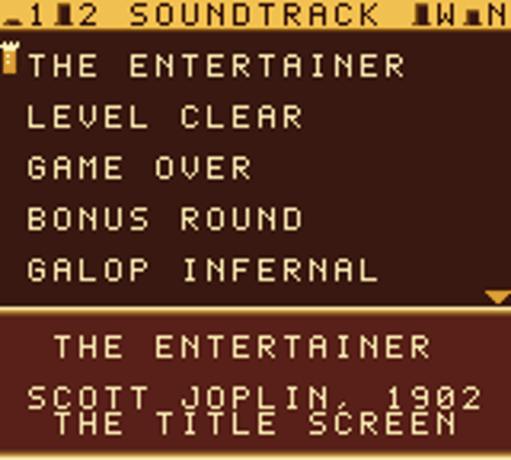
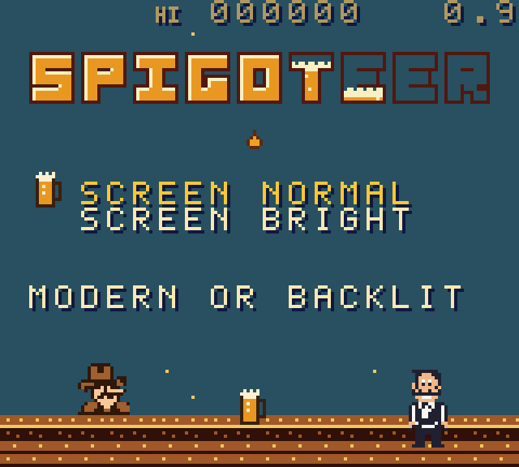
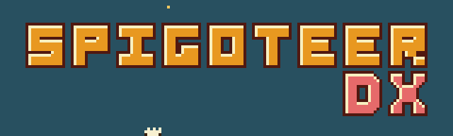
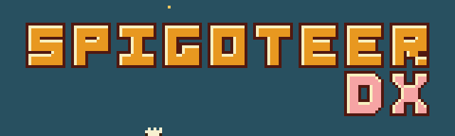
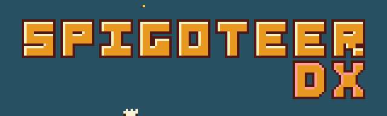
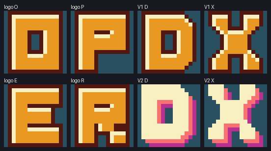
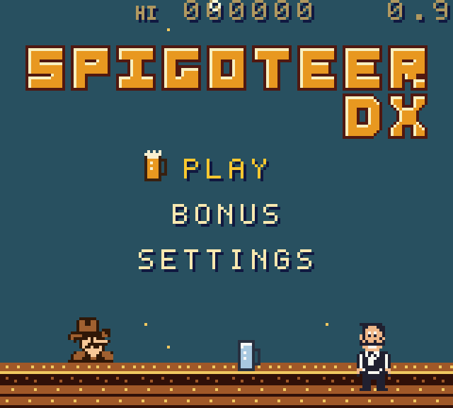
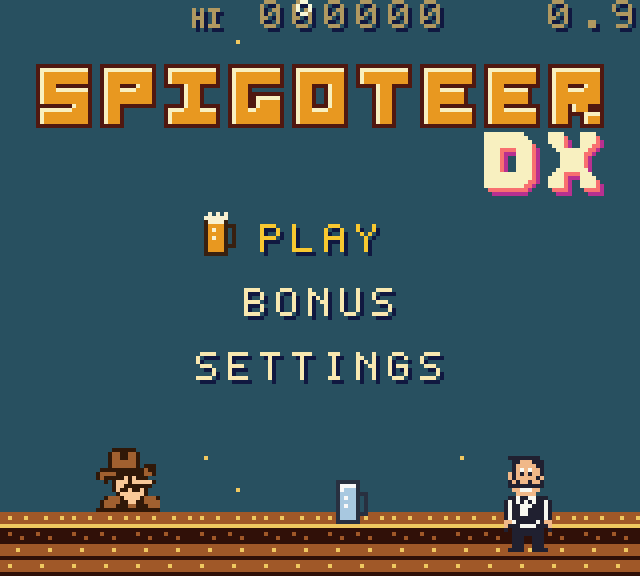
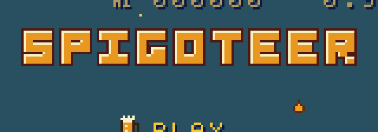

Moving pictures for the questions I ask you. Cards marked with a Q number need an answer. The others are reference.
Updated 2026-10-21 · main a39c7d3 · graphics atlas: claude.ai/artifact/RLQysU9fNNbcZR2TS8x5XZ

Four small level bars sit in the top band. The left pair is labelled 1 and 2, the two square-wave channels. The right pair is W and N, the wave and noise channels. They jump with the music, fall one step per frame, and rest when the music stops.
You liked them, and are thinking about a menu change that would give a visualiser more room.

On a GBA with no saved choice, the title asks once before its menu. NORMAL is highlighted first. Moving the cursor re-lights the whole title, so the title itself is the preview. A or START saves the choice, and SETTINGS > SCREEN can still change it later. A Game Boy Color or DMG is never asked.
The full captions did not fit the 20-column text grid, so the agent shortened them. Under NORMAL: "MODERN OR BACKLIT". Under BRIGHT: "FOR THE GBA SCREEN".
Does the prompt look and read right, and is the wording OK?
Same letters and placement as V1. Only palette colours change, so any of these costs nothing extra in the game. Each cycle takes about 1.6 seconds here, and the speed is easy to change.
A, muted fill: the orange body cycles through softer rainbow colours. The brown outline and cream foam stay.

B, pastel fill: like A, but paler and gentler.

C, rainbow foam: the body stays the logo's orange. Only the cream highlight along the top and left edges shimmers through colours.

D, fill and foam together: the body cycles muted colours and the highlight follows a step ahead, very pale.
Which rainbow effect: A, B, C or D? Should the cycle be slower or faster?

Each letter is 16 by 16, like the logo's letters, with 4 px strokes and a small rectangular counter. The D's right corners are cut at 45 degrees, because a square D read as an O. The pair sits under the logo's last two letters and lines up with the R's right edge. It takes 4 sprites instead of 3.
V1, logo look: the logo's own orange, brown outline and cream foam. No rainbow.

V2, your scheme: cream letters with the rainbow drop shadows. To fit three colours, it drops the logo's brown outline. The far shadow gives the dark edge on the lower right only.

You chose V1's larger letters and placement, with a softer rainbow than V2. See Q32 above.

Captured from the game on Color at its real frame rate. One rainbow cycle takes about 1.6 seconds.